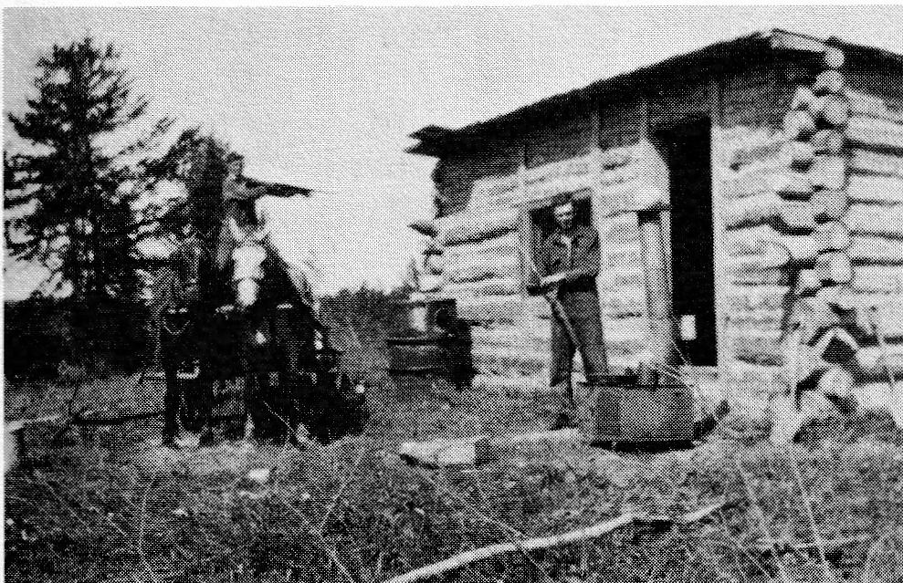
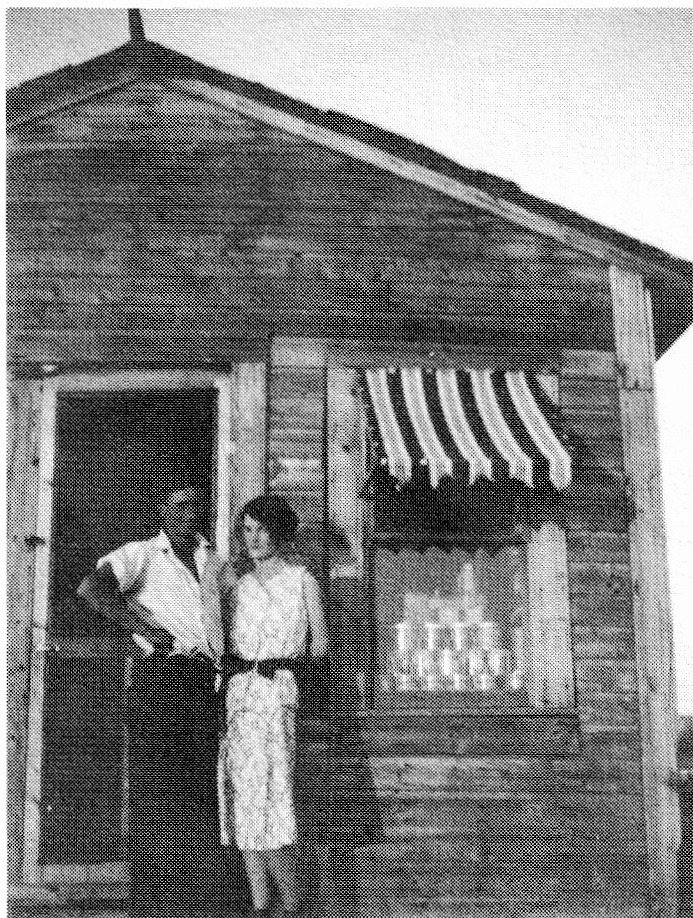

in a big desk. Now, he did not hand them out easily. One had to perform first! He used to make us kids dance, jig or sing before we received our treats. My first cousins, Henry L'Heureux and Hervé Nolin, both remember this, too.
I just loved the horses and Granddad had lots of them! I was about twelve years old when Granddad gave me my last horse. Louis was staying at Uncle Alphonse's place one summer and Alphonse was going someplace so he dropped Louis off at Granddad's place where I was. Uncle Toni, Uncle Pete and I each had a saddle horse and, as there were only three horses, it meant one of us didn't get a horse. Pretty soon a fight started when one of the uncles would open the corral gate and I would close it. Then someone else would open the gate and close it while the other one would try to get a horse - my horse. This went on for some time and I was getting madder as I didn't want them to take my horse. Things settled down for awhile. Then Uncle Wilfrid and Uncle Pete got into a helluva drunk and they were coming over the hill, whooping and hollering. Granddad grabbed the old piss pot from upstairs and, when they got closer, he let them have it! Aunt Rose started to blame Louis and me for all the trouble so Louis yelled back at them, "Mange la...." and took off as fast as he could run!
Uncle Toni was five to six years older than I was and Uncle Wilfrid about eight older. They both had a bedroom upstairs and would offer me bribes to sleep with them. One offered me five dollars while the other offered me all of his pictures.

When my brothers, Louis and Rolland, and I got to the age of possibly settling down, Dad decided to go look for land. Someone had told him there was land up north so away Dad went to investigate. When he came back, he drove us to the land titles office in Prince Albert to take out our claims. Dad, Louis and I all got a half section for ten dollars with the only requirement that we make improvements by clearing the land and possibly build on it. In the fall of 1928, with all of our belongings including machinery loaded into boxcars, we made off for our new home at Veillardville. Dad settled across from White Poplar School and began clearing the land. Shortly afterwards, he operated a sawmill south of Veillardville.
The Cockwill family homesteaded north of Veillardville - right at the fireguard. They had a lovely daughter, Verna, who I wanted to take out but was too shy to ask! Anyhow, Rolland beat me to it. He took Verna to a dance at the school but Rolland couldn't dance. All he could do was square dance so I ended up with Verna! Later, she worked for me in my store and, in the fall of 1933, we were married in Flin Flon, Manitoba. Following our wedding, we boarded the train for Hudson Bay and arrived at 4:30 A.M. Verna and I had to walk out to Veillardville as the train didn't go any further at that time of night. A few nights later a number of our neighbors woke us up and shivareed us!

We lived in a small house north of the hall for approximately ten years. During this time our first child, Dawn, was born. I remember the night Verna and the baby arrived home from the Tisdale Hospital. It was a cold January mail